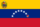

De: La Frikipedia, la enciclopedia extremadamente seria.
De: La Frikipedia, la enciclopedia extremadamente seria. De: La Frikipedia, la enciclopedia extremadamente seria.
| De la serie tribus urbanas del mundo: | |||
| Malandro | |||
| |||
| Hábitat | Todas las calles de Venezuela. | ||
|---|---|---|---|
| Inteligencia | Nula, pero saben como hacer el atraco perfecto. | ||
| Frase favorita | Dame to' lo que calga' enshima becerro. | ||
| ¿Peligroso? | Lo suficiente como para hacerte correr varias cuadras | ||
| Obsesión | dinero, joyas, oro, Hip Hop, motos, pistolas "Glo" 9mm, reggaeton, afiches del oficialismo, santería, gomina para el pelo y putas feas. | ||
| Notas | Mira mamgüebo, dame to' lo que calgah enshima sino quieres que te quiebre. | ||
Un malandro es un ordinario Criminal que se puede apreciar en las colinas de la ciudad capital de Chavelandia en proporciones bíblicas. Se le suele comparar como el equivalente a un cani, solo que mucho peor, huele mal y es la digievolución de un tierruo. Esta especie en peligro de sobrepoblación tiende a ser algo marginal y a tener costumbres distintas a la gente normal pero en sí son útiles para la comunidad como los mayores consumidores de plomo de toda Venezuela.
Fuertes estudios de lo paranormal han descubierto las típicas características de esta especie particular de las calles venezolanas, entre sus costumbres además de vivir matando a la gente están las siguientes:
Como se puede apreciar los malandros son unas criaturas muy interesantes y da curiosidad el ver a esos anormales fumándose un porro en medio de la calle con niños alrededor y preguntando a mamá que qué es ese olor extraño y exitante. Ahora procederemos a ver sus áreas comunes.
Por lo general el malandro promedio anda por casi toda la ciudad montado en su famosa moto taxi ó moto malandro que es tan segura y perfecta como un coche presidencial ó el batiPapamóvil, pero tienes que llevar encima un casco, 3 chaquetas, 2 pares de guantes y alrededor de 5 pantalones para un viaje seguro en moto malandro y si quieres cruzar toda Venezuela en moto malandro lo recomendable es evitar a los polis de tránsito y a los seguratas que pretenden confiscar la moto robada ya que viene cargada de mercancía que el malandro debe traficar transportar.
Entre los hábitats disponibles que seguramente encontrarás a un malandro están los siguientes:
Hay más sitios donde se pueden encontrar malandros pero el espacio no es suficiente y podemos continuar con describir su ecosistema. Pues el ecosistema de un malandro consiste en las necesidades básicas de un negro marginal de mala caña: Lo primero es la plata, lo segundo es el yerro ó pistola, lo tercero es robar a alguien, lo cuarto es una casa, lo penúltimo es un carajito o niño y lo último es una jeva ó mujer. Así de sencillo piensa un malandro, pero cada quien tiene su punto de vista, unos quieren la droga, otros a una jeva y la droga, y unos la droga, la jeva y un macho en la casa.
Los malandros sinenten una gran inclinación hacia la basura rompeoídos 3000X ya que se sienten identificados con esa mierda música extraña que habla exactamente de la vida cotidiana de ellos. Siempre se le verá a un malandro con un MP3 o un celular Nokia chicharrero a todo volumen con una música repetitiva e hipnotizante y que si la escuchas se te caen los güebos al suelo.
Otra música que les gusta es el ballenato de la república de la droga colombiana y ponerlo a todo volumen en la calle mientras haces la tarea de la semana pasada tranquilo en tu casa con una página porno abierta. Sin duda alguna los malandros son criaturas extravagantes y emocionantes ya que son únicas en el mundo y son muy raros de conseguir en otro sitio que no sea Venezuela.
El rap no se sale de su repertorio de "éxitos" musicales. Entre sus "artistas favoritos" están: DJ pene, DJ chino con arroz, DJ viernes trece, DJ negro, DJ blanco, DJ deejay, DJ Disc Jockey, DJ hector el father de 10 hijos, DJ moco y otros DJ famosos como DJ friki. Casi los malandros se consideran artistas de la calle con sus extravagantes grafitis políticos y sus "canciones" que serán exitasos de la radio.
Pues los malandros tienen sus némesis que no llegan a vivir más de 3 horas máximo, pero hay algunos que logran sobrevivir mamando al malandro.
Casi toda Venezuela apoya a los malandros pero un mínimo porcentaje del 70% está en contra de ellos, pero casi algunos son famosas tribus urbanas que son los:
En fin, los malandros son odiados por casi todo el país pero tiene sus aliados y cómplices en el crimen desorganizado que les ayudan en la compra de yerros, la fumadera y una noche en un motel de mala caña, entre ellos son:
Cada malandro tiene su código de conducta que deben seguir al pie de la letra, el siguiente texto estará escrito en venezolano y si no entiendes una pepa de lo que dice busca guguel venezuela:
Mira menol, esto se acabó y no hay ma'. Deja comentario o sino quieres que te quieble con mi glo 9mm. Si calga rial damelo ante' que te mande al barrio entero pa' cojete lo que calga' encima lacra. Mira mamaguebo vente pal barrio pa pasá' un rato chevere sin estre' y si lo' paco vienen a ladilla' lo' quebramo. Mira marico, dejame la melca celca pa' que me pueda queda' tranquilo o sino quiere' que te reviente la jeta, becerro.
| Tribus Urbanas | ||||
|---|---|---|---|---|
|
Universales
Argentinas
Mexicanas
Peruanas
|
|  Venezuela | |
| Geografía
Personalidades
Políticos
Furbo
Otros
|
Autor(es):